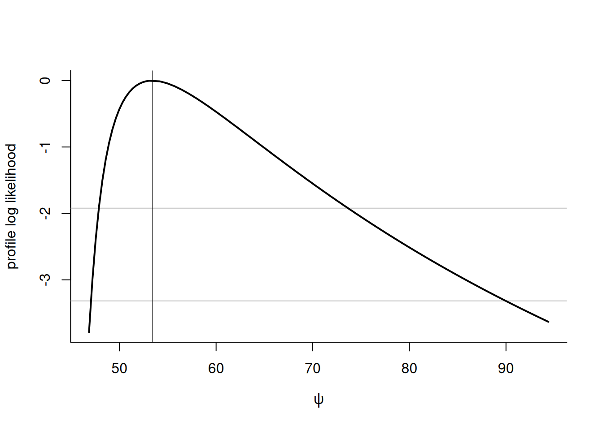

library(mev)
# library(xts)
# library(lubridate)
data(frwind, package = "mev")
lyon <- with(frwind,
xts::xts(x = S2, order.by = date))
# Create series of yearly maximum
ymax <- xts::apply.yearly(lyon, max)Likelihood-based inference
The mev package provides gradient-based optimization routines for fitting univariate extreme value models, either block maxima or threshold exceedances, using one of four likelihoods: that of the generalized extreme value distribution, the generalized Pareto distribution, and the inhomogeneous Poisson point process and the \(r\)-largest order statistics.
Relative to other packages such as evd or ismev, the package functions include analytic expressions for the score and observed informations, with careful interpolation when \(\xi \approx 0\). However, mev does not handle generalized linear or generalized additive models for the parameters, to avoid having as many inequality constraints in the optimization as there are observations times the number of covariates.
Basic theory
Let \(\ell(\boldsymbol{y}; \boldsymbol{\theta})\) denotes the log-likelihood of an \(n\) sample with a \(p\)-dimensional parameter \(\boldsymbol{\theta}\). The score vector is \(\ell_{\boldsymbol{\theta}}(\boldsymbol{\theta})=\partial \ell / \partial \boldsymbol{\theta}\), while the Fisher information is \(\imath(\boldsymbol{\theta})=\mathrm{E}\{\ell_{\boldsymbol{\theta}}(\boldsymbol{\theta})\ell_{\boldsymbol{\theta}}(\boldsymbol{\theta})^\top\}\). Under regularity conditions, we also have \(\imath(\boldsymbol{\theta}) = - \mathrm{E}(\partial^2 \ell / \partial \boldsymbol{\theta}\partial \boldsymbol{\theta}^\top)\). The observed information is the negative Hessian \(\jmath(\boldsymbol{\theta})-\partial^2 \ell / \partial \boldsymbol{\theta}\partial \boldsymbol{\theta}^\top\), evaluated at the maximum likelihood estimator \(\hat{\boldsymbol{\theta}}\).
By definition, the maximum likelihood estimator solves the score equation, i.e. \(\ell_{\boldsymbol{\theta}}(\hat{\boldsymbol{\theta}})=\boldsymbol{0}_p\). If the maximum likelihood estimator is not available in closed-form, its solution is found numerically and this property can be used to verify that the optimization routine has converged or for gradient-based maximization algorithms.
Statistical inference
This section presents some test statistics that can easily be computed using some of the functionalities of mev, as well as confidence intervals for parameters and common functionals, based on the profile likelihood.
The three main type of test statistics for likelihood-based inference are the Wald, score and likelihood ratio tests. The three main classes of statistics for testing a simple null hypothesis \(\mathscr{H}_0: \boldsymbol{\theta}=\boldsymbol{\theta}_0\) against the alternative \(\mathscr{H}_a: \boldsymbol{\theta} \neq \boldsymbol{\theta}_0\) are the likelihood ratio, the score and the Wald statistics, defined respectively as \[\begin{align*} w &= 2 \left\{ \ell(\hat{\boldsymbol{\theta}})-\ell(\boldsymbol{\theta}_0)\right\},\qquad \\w_{\mathsf{score}} &= U^\top(\boldsymbol{\theta}_0)i^{-1}(\boldsymbol{\theta}_0)\ell_{\boldsymbol{ heta}}(\boldsymbol{\theta}_0),\qquad \\ w_{\mathsf{wald}} &= (\hat{\boldsymbol{\theta}}-\boldsymbol{\theta}_0)^\top i(\boldsymbol{\theta}_0)(\hat{\boldsymbol{\theta}}-\boldsymbol{\theta}_0), \end{align*}\] where \(\hat{\boldsymbol{\theta}}\) is the maximum likelihood estimate under the alternative and \(\boldsymbol{\theta}_0\) is the null value of the parameter vector. The statistics \(w, w_{\mathsf{score}}, w_{\mathsf{wald}}\) are all first order equivalent and asymptotically follow a \(\chi^2_p\) distribution, where \(q\) is the difference between \(p\) and the number of parameters under the null hypothesis. Under the conditions of the Neyman–Pearson theorem, the likelihood ratio test is most powerful test of the lot. The score statistic \(w_{\mathsf{score}}\) only requires calculation of the score and information under \(\mathscr{H}_0\), which can be useful in problems where calculations under the alternative are difficult to obtain. The Wald statistic \(w_{\mathsf{wald}}\) is not parametrization-invariant and typically has poor coverage properties.
Oftentimes, we are interested in a functional of the parameter vector \(\boldsymbol{\theta}\). The profile likelihood \(\ell_\mathsf{p}\), a function of \(\boldsymbol{\psi}\) alone, is obtained by maximizing the likelihood pointwise at each fixed value \(\boldsymbol{\psi}=\boldsymbol{\psi}_0\) over the nuisance vector \(\boldsymbol{\lambda}_{\psi_0}\), \[\begin{align*} \ell_\mathsf{p}(\boldsymbol{\psi})=\max_{\boldsymbol{\lambda}}\ell(\boldsymbol{\psi}, \boldsymbol{\lambda})=\ell(\boldsymbol{\psi}, \hat{\boldsymbol{\lambda}}_{\boldsymbol{\psi}}). \end{align*}\] We denote the restricted maximum likelihood estimator \(\hat{\boldsymbol{\theta}}_\psi= (\psi, \hat{\lambda}_{\psi})\).
We can define score and information in the usual fashion: for example, the observed profile information function is [j_() =- = {j^{}(, _{})}^{-1}. ]
We can turn tests and their asymptotic distribution into confidence intervals. For the hypothesis \(\psi = \psi_0\), a \((1-\alpha)\) confidence interval based on the profile likelihood ratio test is \(\{ \psi: 2\{\ell(\hat{\theta}) - \ell(\hat{\theta}_{\psi})\} \leq \chi^2_1(0.95)\}\).
Likelihoods
There are four basic likelihoods for univariate extremes: the likelihood of the generalized extreme value (GEV) distribution for block maxima, the likelihood for the generalized Pareto distribution and that of the non-homogeneous Poisson process (NHPP) for exceedances above a threshold \(u\) and lastly the likelihood of the \(r\)-largest observations.
Generalized extreme value distribution
The generalized extreme value (GEV) distribution with location parameter \(\mu \in \mathbb{R}\), scale parameter \(\sigma \in \mathbb{R}_{+}\) and shape parameter \(\xi \in \mathbb{R}\) is \[\begin{align*} G(x) = \begin{cases} \exp\left\{-\left(1+\xi \frac{x-\mu}{\sigma}\right)^{-1/\xi}\right\}, & \xi \neq 0,\\ \exp \left\{ -\exp \left(-\frac{x-\mu}{\sigma}\right)\right\},& \xi = 0, \end{cases} \end{align*}\] defined on \(\{x \in \mathbb{R}: \xi(x-\mu)/\sigma > -1\}\) where \(x_{+} = \max\{0, x\}\). The case \(\xi=0\) is commonly known as the Gumbel distribution. We denote the distribution by \(\mathsf{GEV}(\mu, \sigma, \xi)\).
The max-stability property allows one to extrapolate the distribution beyond observed levels: one can show that the distribution of the maximum of a larger block (or \(N\) block maximum) would be also generalized extreme value if \(Y_i \sim \mathsf{GEV}(\mu, \sigma, \xi)\) are independent, where \(\max_{i=1}^N Y_i \sim \mathsf{GEV}(\mu_N, \sigma_N, \xi)\) and \(\mu_N = \mu + \sigma(N^\xi-1)/\xi\) and \(\sigma_N = \sigma N^\xi, \xi_N = \xi)\) — the case \(\xi=0\) is defined by continuity. In practice, we can partition data into \(m\) blocks of roughly equal size \(n/m\) and fit a GEV distribution to the maximum of the blocks.
The GEV distribution is suitable for maximum of a large number of observations: the larger the block size, the closer the approximation will be, but the smaller the sample size \(m\).in In practice, there is a natural block size (say yearly) over which to compute maximum. The advantage is that, even if data are not stationary, we can expect the maximum to occur roughly at the same time of the year (e.g., for temperature) and so even if the true block size is much lower than 365 days, we can still use our approach.
The fit.gev function includes two optimization routines: either use the PORT methods from nlminb, or Broyden-Fletcher-Goldfarb-Shanno algorithm (BFGS) inside a constrained optimization algorithm (augmented Lagrangian). The default option is nlminb, which sometimes returns diagnostics indicating false convergence when the model is near the maximum likelihood estimate.
As for other model, parameters can be fixed and nested models can be compared using the anova S3 method. For these, we distinguish between estimated coefficients (estimate) or with the coef method, and the full vector of parameters, param.
Numerical example
We consider in the tutorial daily mean wind speed data, measured in km/h, at four weather stations located in the south of France. We first take the data for Lyon’s airport (station \(S_2\)) and compute the annual maximum.
We can then fit a GEV distribution via maximum likelihood to the yearly maximum, extract the coefficients \(\widehat{\boldsymbol{\theta}}\) and check convergence by computing the score \(\ell_{\boldsymbol{\theta}}(\widehat{\boldsymbol{\theta}})\) and comparing it to the zero vector.
opt_gev <- mev::fit.gev(xdat = ymax, show = TRUE)Log-likelihood: -141.6626
Estimates
loc scale shape
36.18449 3.94287 -0.01124
Standard Errors
loc scale shape
0.6589 0.4881 0.1318
Optimization Information
Convergence: successful
Function Evaluations: 27
Gradient Evaluations: 11 mle <- coef(opt_gev)
isTRUE(all.equal(rep(0,3),
mev::gev.score(par = mle, dat = ymax),
check.attributes = FALSE,
tolerance = 1e-5))[1] TRUEHaving found the MLE, we can compute the covariance matrix of the parameters from the observed information matrix. The standard errors are the square root of the elements on the diagonal. While mev uses exact formulae, these can be approximated by computing the hessian via finite differences.
# Compute observed information matrix
jmat <- mev::gev.infomat(par = mle, dat = ymax)
# Compute standard errors
se_mle <- sqrt(diag(solve(jmat)))
# Compare with 'mev' output
isTRUE(all.equal(se_mle, opt_gev$std.err))[1] TRUEEven if we have parameter estimates, there is no guarantee that the model is adequate. Standard visual goodness-of-fit diagnostics can be obtained with the plot method. To see other methods, query methods(class = "mev_gev").
# PP and QQ plots
par(mfrow = c(1,2))
plot(opt_gev)graphics.off()The Gumbel distribution, which corresponds to a GEV with shape \(\xi=0\), can be estimated by restricting a parameter. We then do a likelihood ratio test since models are nested.
opt_gumb <- mev::fit.gev(xdat = ymax,
fpar = list(shape = 0))
anova(opt_gev, opt_gumb)Analysis of Deviance Table
npar Deviance Df Chisq Pr(>Chisq)
opt_gev 3 283.32
opt_gumb 2 283.33 1 0.0073 0.9321None of the parameters are of interest in themselves. We may be interested rather by a risk summary, which is a function of parameters. For example, we could get the parameters of the GEV for 50 years via max-stability and return the average if \(\widehat{\xi}<1\), or quantiles — the most popular choices are the median and 0.368, which corresponds roughly to the 50 year return level for threshold exceedances.
All of these are invariant to reparametrization, so we can use the formula and plug-in the parameter values. For inference, we reparametrize the model in terms of this quantity, then vary over a grid of values of the 50-year average maximum and compute profile-likelihood-based confidence intervals at level 95%.
gev.mle(xdat = ymax, args = "Nmean", N = 50) Nmean
53.4114 # Compute profile log-likelihood
prof <- mev::gev.pll(param = "Nmean", dat = ymax, N = 50)
# Extract confidence intervals
(confint(prof))Estimate Lower CI Upper CI
53.41140 47.79346 73.63881 Generalized Pareto distribution
The generalized Pareto (GP) distribution with scale \(\sigma \in \mathbb{R}_{+}\) and shape \(\xi \in \mathbb{R}\) is \[\begin{align*} G(x) = \begin{cases} 1-\left(1+\xi \frac{x}{\sigma}\right)_{+}^{-1/\xi}, & \xi \neq 0,\\ 1- \exp \left(-\frac{x}{\sigma}\right),& \xi = 0. \end{cases} \end{align*}\] The range of the generalized Pareto distribution is \([0, -\sigma/\xi)\) if \(\xi < 0\) and is \(\mathbb{R}_{+}\) otherwise. We denote the distribution by \(\mathsf{GP}(\sigma, \xi)\). The default optimization algorithm for this model is that of Grimshaw (1993), which reduces the dimension of the optimization through profiling. The exponential distribution and the case \(\xi=-1\) are handled separately. If the sample coefficient of variation is less than one, the global maximum lies on the boundary of the parameter space since there exists for any \(\xi<-1\) a value \(\sigma^*\) such that \(\ell(\sigma^*, \xi) \to \infty\): the search is thus restricted to \(\xi \geq -1\). These cases are more frequent in small samples due to the negative bias of the maximum likelihood estimator of the shape.
Except for this boundary case, the maximum likelihood estimator solves the score equation \(\partial \ell(\boldsymbol{\theta}) / \partial \boldsymbol{\theta} = \boldsymbol{0}_2\). We can thus check convergence by verifying that the score vanishes at the maximum likelihood estimate.
If \(\widehat{\xi} < -0.5\), the asymptotic regime is nonstandard (Smith, 1985) and the standard errors obtained from the inverse information matrix are unreliable; as such, mev does not report them and prints an optional warning.
The figure shows the profile likelihood for \(\eta = -\xi/\sigma\) for two datasets, one of which (leftmost) achieves its maximum at \(\widehat{\xi} = -1\) and \(\widehat{\eta} = 1/\max(\boldsymbol{y})\).
# Only keep data from September to April
windlyon <- with(
frwind,
S2[lubridate::month(date) <= 4 |
lubridate::month(date) >= 9])
# Keep only 100 largest points (fewer because of ties)
u <- quantile(windlyon,
probs = 1-100/length(windlyon))
# Fit generalized Pareto via ML
fitted_gp <- fit.gpd(
xdat = windlyon,
threshold = u,
show = TRUE)Method: Grimshaw
Log-likelihood: -207.5276
Threshold: 33.84
Number Above: 90
Proportion Above: 0.0079
Estimates
scale shape
3.57863 0.03088
Standard Errors
scale shape
0.6091 0.1337
Optimization Information
Convergence: successful # P-P and Q-Q diagnostic plots
par(mfrow = c(1, 2))
plot(fitted_gp)graphics.off()
# Fit exponential by passing a list with a fixed parameter
reduced_gp <- fit.gpd(windlyon,
threshold = u,
fpar = list(shape = 0))
# The MLE is sample mean of exceedances - check this
isTRUE(coef(reduced_gp) == mean(windlyon))[1] TRUE# Compare nested models using likelihood ratio test
anova(fitted_gp, reduced_gp)Analysis of Deviance Table
npar Deviance Df Chisq Pr(>Chisq)
fitted_gp 2 415.06
reduced_gp 1 502.50 1 87.448 < 2.2e-16 ***
---
Signif. codes: 0 '***' 0.001 '**' 0.01 '*' 0.05 '.' 0.1 ' ' 1The mev package includes alternative routines for estimation, including the optimal bias-robust estimator of Dupuis (1999) and the approximate Bayesian estimators of Zhang & Stephens (2009) and Zhang (2010). The latter two are obtained by running a Markov chain Monte Carlo algorithm, but only the posterior mean and standard deviation are returned to reduce the memory footprint of the returned object, and these are calculated on the fly using running mean and variance estimators.
# Bayesian point estimates (based on MAP)
fit.gpd(windlyon,
threshold = u,
show = TRUE,
MCMC = TRUE,
method = "zhang")
Method: Zhang
Threshold: 33.84
Number Above: 90
Proportion Above: 0.0079
Approximate posterior mean estimates
scale shape
3.456 0.066
Posterior mean estimates
scale shape
3.5594 0.0495
Monte Carlo standard errors
scale shape
0.453 0.130
Estimates based on an adaptive MCMC
Runs: 10000
Burnin: 2000
Acceptance rate: 0.43
Thinning: 1 If the sample is small, maximum likelihood estimators are biased for the generalized Pareto distribution (the shape parameter is negatively biased, regardless of the true value for \(\xi\)). Bias correction methods includes the modified score of Firth, but the default method is the implicit correction (subtract), which solves the implicit equation \[\begin{align}
\boldsymbol{\tilde{\theta}}=\hat{\boldsymbol{\theta}}-\boldsymbol{b}(\tilde{\boldsymbol{\theta}}). \label{eq:implbias}
\end{align}\] The point estimate \(\boldsymbol{\tilde{\theta}}\) is obtained numerically as the root of this nonlinear system of equations. In the present case, the sample size is large and hence the first-order correction, derived through asymptotic arguments from the generalized Pareto distribution likelihood, is small. Note that the bias correction requires \(\xi > -1/3\), since it is based on third-order cumulants of the distribution.
# First-order bias corrected estimates
corr_coef <- gpd.bcor(par = coef(fitted_gp),
dat = windlyon,
corr = "firth")Error in bcor.st$value : $ operator is invalid for atomic vectorsInhomogeneous Poisson process
Let \(Y_{(1)} \geq \cdots \geq Y_{(r)}\) denote the \(r\) largest observations from a sample. The likelihood of the limiting distribution of the point process for the \(r\)-largest observations is, for \(\mu,\xi\in\mathbb{R}, \sigma>0\), [ (,,; ) -r() - (1+){j=1}^r (1 + ){+} - (1 + )^{-1/}_+. ] This likelihood can be used to model the \(r\)-largest observations per block or threshold exceedances where the threshold is the \(r\)th order statistic
Consider a sample of \(N\) observations, of which \(n_u\) exceed \(u\) and which we denote by \(y_1, \ldots, y_{n_u}\). The likelihood associated to the limiting distribution of threshold exceedances is, for \(\mu, \xi \in \mathbb{R}, \sigma >0\), \[\begin{align} L(\mu, \sigma, \xi; \boldsymbol{y}) = \exp \left[ - c \left\{1+ \xi \left( \frac{u-\mu}{\sigma}\right)\right\}^{-1/\xi}_{+}\right] (c\sigma)^{-n_u}\prod_{i=1}^{n_u} \left\{1+\xi\left( \frac{y_i-\mu}{\sigma}\right)\right\}^{-1/\xi-1}_{+},\label{eq:ppp_lik} \end{align}\] where \((\cdot)_{+} = \max\{0, \cdot\}\). The quantity \(c\) is a tuning parameter whose role is described in 7.5 of Coles (2001). If we take \(c=N/m\), the parameters of the point process likelihood correspond to those of the generalized extreme value distribution fitted to blocks of size \(m\). The NHPP likelihood includes a contribution for the fraction of points that exceeds the threshold, whereas the generalized Pareto is a conditional distribution, whose third parameter is the normalizing constant \(\zeta_u=\Pr(Y>u)\). Since the latter has a Bernoulli and \(\zeta_u\) is orthogonal to the pair \((\sigma, \xi)\), it is often omitted from further analyses and estimated as the proportion of samples above the threshold.
The model includes additional arguments, np and npp (number of observations per period). If data are recorded on a daily basis, using a value of npp = 365.25 yields location and scale parameters that correspond to those of the generalized extreme value distribution fitted to block maxima. Alternatively, one can specify instead the number of periods np, akin to \(n_y\) in Eq. 7.8 of Coles (2001) — only the latter is used by the function, with npp*np theoretically equal to the number of exceedances.
The tuning parameters impact the convergence of the estimation since the dependence between parameters becomes very strong: Sharkey & Tawn (2017) suggest to pick a value of np that near-orthogonalize the parameters. Wadsworth:2011 recommended picking this to be the number of observations (so npp=1), but Moins et al. (2023) show that a better choice leads to orthogonalization.
Another option is to fit the generalized Pareto model: if the probability of exceeding threshold \(u\) is small, the Poisson approximation to binomial distribution implies [c {1+ ( )}^{-1/} n_u, ] where \(n_u\) is the number of threshold exceedances above \(u\) and \(c\) is the tuning parameter np. With the point estimates of the generalized Pareto model, say \((\widehat{\sigma}_u, \widehat{\xi})\), we thus use \[\begin{align*}
\mu_0 &= u - \sigma_0\{(n_u/c)^{-\widehat{\xi}}-1\}/\widehat{\xi},\\
\sigma_0 &= \widehat{\sigma}_u\times (n_u/c)^{\widehat{\xi}},
\end{align*}\] and \(\xi_0=\widehat{\xi}\) as starting values. Most of the time, these values are so close to the solution of the score equation that numerical convergence of the optimization routine is all but guaranteed in a few likelihood evaluations. If no starting value is provided and some fixed parameters are provided, the model will approximate the distribution of the vector of parameters by a multivariate Gaussian distribution and compute the best linear predictor of the remaining parameters given those are fixed. This method works well if the log-likelihood is near quadratic and the values are not too far from the maximum, but does not deal with the boundary constraints. In case these starting values are invalid, and an error message is returned.
The log likelihood of the \(r\) largest order statistics likelihood is derived from the inhomogenenous Poisson point process formulation. We normally consider a matrix of observations \(m \times r\) containing the largest \(r\) order statistics of each block out of the \(n\) sample. The parameters of the \(r\)-largest likelihood are the same as the generalized extreme value distribution (a special case when \(r=1\)). This model can be used when we have access to order statistics, assuming that the observations within the block are independent.
\[\begin{align*} \ell(\mu,\sigma,\xi; \boldsymbol{y}) &= -rm\log(\sigma) - \left(1+\frac{1}{\xi}\right)\sum_{i=1}^m\sum_{j=1}^r \log\left(1 + \xi\frac{y_{i,(j)}-\mu}{\sigma}\right)_{+} \\ &\quad- \left(1 + \xi\frac{y_{i,(r)}-\mu}{\sigma}\right)^{-1/\xi}_+, \quad \mu,\xi\in\mathbb{R}, \sigma>0. \label{eq:rlarglik} \end{align*}\] It’s not obvious how to chose \(r\), but Belzile & Davison (2022) shows the gain from considering larger values of \(r\) decreases quickly for the shape. The support constraints, typically arising for the minimum observation, means that finding good starting values is hard.
We can simulate from the \(r\) largest observations by drawing from a unit rate Poisson process \(0<U_1<U_2<\cdots\), where \(U_j=E_1+\cdots+E_j\) and \(E_j\sim \mathsf{Exp}(1)\), and setting \(Y_{j} = \mu + \sigma\big(U_j^{-1/\xi}-1\big)/\xi\). Applying the inverse transformation \(\Lambda_{\boldsymbol{\theta}}(y) = \left\{ 1 + \xi(y-\mu)/\sigma\right\}^{-1/\xi}_+\) evaluated at the MLE gives roughly independent exponential spacings, which can be used to create quantile-quantile plots.
Risk measures
Two typical questions in extreme values are: given the intensity of an extreme event, what is its recurrence period? and what is a typical worst-case scenario over a given period of time? For the latter, suppose for simplicity that the daily observations are blocked into years, so that inference is based on \(N\) points for the \(N\) years during which the data were recorded. The return level is a quantile of the underlying distribution corresponding to an event of probability \(p=1-1/T\) for an annual maximum, which is interpreted as ``the level exceeded by an annual maximum on average every \(T\) years’’. If observations are independent and identically distributed, then we can approximate the probability that a return level is exceeded \(l\) times over a \(T\) year period using a binomial distribution with probability of success \(1-1/T\) and \(T\) trials. For \(T\) large, the return level is exceeded \(l=0, 1, 2, 3, 4\) times within any \(T\)-years period with approximate probabilities 36.8%, 36.8%, 18.4%, 6.1% and 1.5%. The probability that the maximum observation over \(T\) years is exceeded with a given probability is readily obtained from the distribution of the \(T\)-year maximum, leading (Cox et al., 2002, p. 3(b)) to advocate its use over return levels, among other quantities of interest such as the number of times a threshold \(u\) will be exceeded in \(T\) years or the average number of years before a threshold \(u\) is exceeded.
Quantiles, mean and return levels of \(T\)-maxima: consider the distribution \(H(x) = G^T(x)\) of the maximum of \(T\) independent and identically distributed generalized extreme value variates with parameters \((\mu, \sigma, \xi)\) and distribution function \(G\). By max-stability, the parameters of \(H(x)\) are \(\mu_T=\mu-\sigma(1-T^\xi)/\xi\) and \(\sigma_T=\sigma T^\xi\) when \(\xi \neq 0\). We denote the expectation of the \(T\)-observation maximum by \(\mathfrak{e}_T\), the \(p\) quantile of the \(T\)-observation maximum by \(\mathfrak{q}_p = H^{-1}(p)\) and the associated return level by \(z_{1/T} = G^{-1}(1-1/T)\). Then, any of these three quantities can be written as \[\begin{align*} \begin{cases} \mu-\frac{\sigma}{\xi}\left\{1-\kappa_{\xi}\right\}, & \xi <1, \xi \neq 0, \\ \mu+\sigma\kappa_0, & \xi =0, \end{cases} \end{align*}\] where \(\kappa_{\xi}=T^\xi\Gamma(1-\xi)\) for \(\mathfrak{e}_T\), \(\kappa_{\xi}=T^\xi\log(1/p)^{-\xi}\) for \(\mathfrak{q}_p\) and \(\kappa_{\xi}=\left\{-\log\left(1-{1}/{T}\right)\right\}^{-\xi}\) for \(z_{1/T}\). In the Gumbel case, we have \(\kappa_0=\log(T)+\gamma_{e}\) for \(\mathfrak{e}_T\), \(\kappa_0=\log(T)-\log\{-\log(p)\}\) for \(\mathfrak{q}_p\) and \(\kappa_0=-\log\{-\log(1-1/T)\}\) for \(z_{1/T}\).
References
Belzile, L. R., & Davison, A. C. (2022). Improved inference on risk measures for univariate extremes. The Annals of Applied Statistics, 16(3), 1524–1549. https://doi.org/10.1214/21-AOAS1555
Coles, S. (2001). An Introduction to Statistical Modeling of Extreme Values (p. 209). Springer–Verlag.
Cox, D. R., Isham, V. S., & Northrop, P. J. (2002). Floods: Some probabilistic and statistical approaches. Philosophical Transactions of the Royal Society of London A: Mathematical, Physical and Engineering Sciences, 360(1796), 1389–1408. https://doi.org/10.1098/rsta.2002.1006
Dupuis, D. J. (1999). Exceedances over high thresholds: A guide to threshold selection. Extremes, 1(3), 251–261. https://doi.org/10.1023/A:1009914915709
Grimshaw, S. D. (1993). Computing maximum likelihood estimates for the generalized Pareto distribution. Technometrics, 35(2), 185–191. https://doi.org/10.1080/00401706.1993.10485040
Moins, T., Arbel, J., Girard, S., & Dutfoy, A. (2023). Reparameterization of extreme value framework for improved Bayesian workflow. Computational Statistics & Data Analysis, to appear. https://doi.org/https://doi.org/10.1016/j.csda.2023.107807
Sharkey, P., & Tawn, J. A. (2017). A Poisson process reparameterisation for Bayesian inference for extremes. Extremes, 20(2), 239–263. https://doi.org/10.1007/s10687-016-0280-2
Smith, R. L. (1985). Maximum likelihood estimation in a class of nonregular cases. Biometrika, 72(1), 67–90. https://doi.org/10.1093/biomet/72.1.67
Zhang, J. (2010). Improving on estimation for the generalized pareto distribution. Technometrics, 52(3), 335–339. https://doi.org/10.1198/TECH.2010.09206
Zhang, J., & Stephens, M. A. (2009). A new and efficient estimation method for the generalized Pareto distribution. Technometrics, 51(3), 316–325. https://doi.org/10.1198/tech.2009.08017